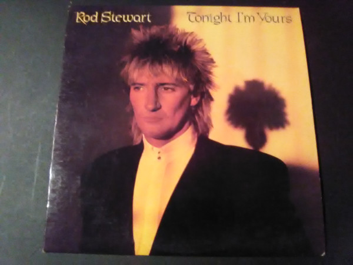

LP
Tonight I'm Yours
Rod Stewart
Media: VG+ · Sleeve: VG
CA$20.00
Discogs SuggestedCA$27.89
Discogs MedianCA$27.89
Discogs HighCA$27.89
- Year
- 1981
- Label
- Warner Bros. Records
- Catalog #
- BSK 3602
- Country
- USUS
- Genre / Style
- Rock, Pop · Pop Rock